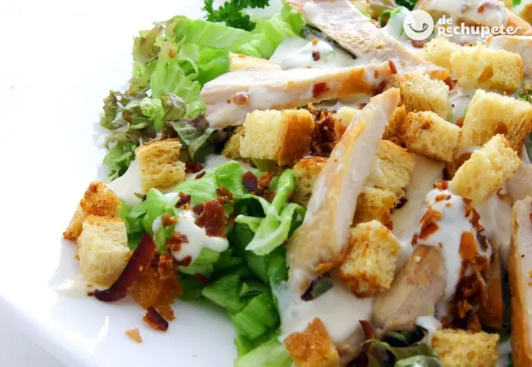

Ensalada César con pollo. Receta de la ensalada más famosa

Preparación de la salsa Cesar
Para preparar la famosa salsa Cesar. Tenemos que introducir en un vaso de batidora las anchoas, la yema del huevo, la cuchara del zumo del limón, el diente de ajo (este se puede quitar de la salsa tal como os comento más adelante), un poco de pimienta blanca o negra, media cuchara de mostaza y el aceite de oliva virgen extra
Mezclamos todo bien con una cuchara y batimos todo como si fuese una mayonesa. El brazo de la batidora tiene que empezar desde abajo y batimos desde el fondo. Cuando empiece a formarse como la mayonesa empezamos a mover de abajo arriba la batidora hasta que esté.
Cuando este emulsionada añadimos el queso parmesano rallado. Removemos con la cuchara hasta que quede bien ligada y ya está la famosa salsa César. Dejamos la salsa en la nevera para que enfríe y seguimos con la preparación de la ensalada.
Preparación de la ensalada César
A la hora de añadir los ingredientes de nuestra ensalada podemos aromatizarla con el ajo sin necesidad de añadirlo a la salsa. Para ello, en el bol en que vayamos a servir la ensalada, el método es machacar dos dientes de ajo hasta su desintegración y frotar con esta pulpa las paredes de bol y luego quitar la pulpa. Así evitamos la potencia del ajo en la salsa y que no nos repita. Conseguiremos una salsa más suave y todo el sabor del ajo.
Lavamos la lechuga y escurrimos bien. Una vez limpia, bien lavada, seca la lechuga y cortada la podemos reservar en la nevera por espacio de 30 minutos. Con esto haremos que quede la lechuga más crujiente.
En una sartén añadimos un poco de aceite de oliva virgen extra y pasamos la pechuga de pollo (entera, los 100 gramos son 2 filetes grandes de pechuga) en el aceite bien caliente. Cuando estén dorados apartamos y quitamos el exceso de aceite con un poco de papel absorbente.
Troceamos en tiras largas y delgadas. La receta original es con pollo asado (puedes congelar parte del que te sobre cuando lo hagas en casa y utilizarlo en esta ensalada) pero como veis esta vez va con pollo macerado con un poco de sal de ajo, comino, pimentón dulce y pimienta a la plancha. Retiramos en un plato hasta montar la ensalada.
Montaje y presentación final de la ensalada César
Respecto al pan, debemos freír los dados de pan en aceite de oliva o los tostamos al horno. Si los freímos debemos ponerlos sobre papel absorbente para quitar parte del aceite absorbido
Los costrones, si los hacemos al horno, después de rociarlos con el aceite usando el spray o un pincel de silicona. Les podemos de poner un poquito de pimienta recién molida. Aunque podéis encontrar la típica bolsa de picatostes de pan que venden en todos los supermercados que están muy crujientes, os pueden valer perfectamente.
Montamos la ensalada con los ingredientes anteriores, incluyendo unas olivas negras (eso es cosa mía). Y por último le añadimos los picatostes de pan. Agregamos la salsa Cesar y aliñamos bien.
¡A disfrutar! Aquí tenéis una ensalada fresquita y bien completa. Lechuga, pan, pollo y el toque especial de la salsa